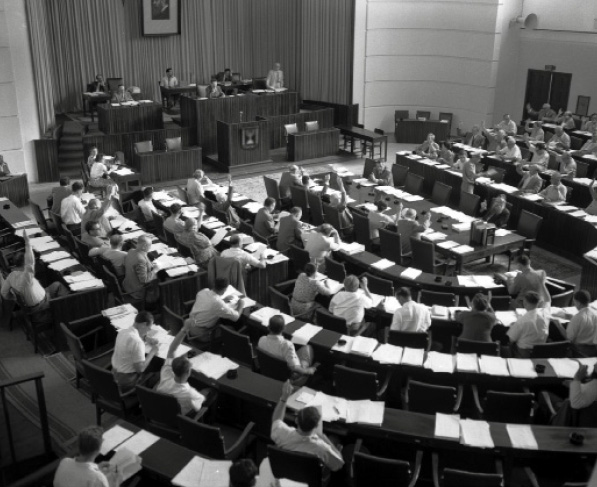

The Rebbe’s Battle for the Unity and Jewish Character of Eretz Yisroel
For nearly thirty years, the Rebbe waged a battle for a (technical) united religious front among the religious parties for the elections or following the elections for the Knesset. In many letters, the Rebbe explained the critical importance of a religious front, which was to increase religious representation and political influence regarding everything pertaining to the Jewish character of Eretz Yisroel. However, shortsighted askanim torpedoed this plan. * As the religious parties are currently jockeying for position it is important to remember that critical battle, if only to close ranks for the sake of the Jewish character of Eretz Yisroel.

“Great is the pain and how shameful it is that there is no [united religious] front at this fateful time.”
“It is unnecessary to go on at length about the great pain and damage caused by this dismantling.”
“I was shocked to read in your letter about the abrogation of the religious front.”
“Perhaps it would be appropriate to have a special emissary sent from here and maybe he can have an influence over those upon whom the matter depends.”
***
These were just some of the many sharp expressions the Rebbe employed in dozens of letters to public figures from all parts of the political spectrum, about the need to establish a religious front for the Israeli elections to the Knesset.
The Rebbe’s words reveal his prophetic vision, for he saw what would happen if a religious front was not formed. When examining the current state of affairs and seeing where the religious parties have gotten to, it is helpful to read the Rebbe’s letters in which he begs the leaders of the religious parties to form a united religious front before the elections. The purpose being to diminish the power of the Left.
The Rebbe’s importuning, versus the shortsightedness of others, demonstrates yet again who actually saw what would take place. People have been surprised over the success of Yesh Atid, while the Rebbe wrote about this decades ago, in the clearest possible way, saying that this is what would happen if there was no united front, even one that was merely technical [for elections only, in order to ensure that no religious votes go to waste].
A RELIGIOUS FRONT AT LEAST AFTER THE ELECTIONS
There were three main religious demands in the first Knesset: “We demand, first and foremost, the observance of Shabbos in this country … We demand kashrus … Jewish law certainly can serve as the foundation of our law in Israel” – this is what was written in the wording of the coalition agreement in the first Knesset.
During the first elections there was a united front among all the parties. It wasn’t merely a technical front, but complete unity among all the religious parties. The various battles facing religious Jewry prompted the Chief Rabbi, Rabbi Yitzchok Isaac Herzog, to urge the establishment of a united front that would nominate one list for the elections that were planned for the beginning of 5709.
At R’ Herzog’s initiative, unity was achieved between Mizrachi, HaPoel HaMizrachi, Agudas Yisroel, and Poalei Agudas Yisroel. The purpose of uniting was stated by Rabbi Nurok, one of the Mizrachi leaders, as “Religious Jewry is obligated to impress that imprint of Judaism upon the legislation and laws by mobilizing all its strength and influence through parliamentary means. Neglect and weakness today will be the cause of weeping for generations.”
Sixteen Knesset members in the first Knesset represented the four religious parties that existed at the time. Their united strength resulted in an agreement that Ben-Gurion signed with them at the forming of the first government. It was an agreement that approved the “status quo” and included:
1-The ministry of religion would continue to be maintained.
2-The religious front would be represented in the new government by: R’ Y. L. Fishman-Maimon – Minister of Religion; R’ Y. M. Levin – Minister of Welfare and Disabled Veterans; Mr. Moshe Shapiro – Minister of the Interior and Aliya.
3-The “status quo” would be preserved in matters of marriage-divorce and kashrus. In the clause to the governmental and legal procedures that establishes Shabbos and Jewish holidays as official days of rest, additional specific rules were to be added, which would allow for preserving the original, Jewish character of Shabbos.
The agreement also established that the acceptance speech of the Prime Minister, in which he would outline his administration’s policies, would include a portion that mentioned these points.
In fact, in his speech to the Knesset on 7 Adar 5709, Prime Minister Ben-Gurion said, “The government will provide the religious needs of its citizens but will prevent religious compulsion. Shabbos and Jewish holidays will be established days of rest in the State of Israel.”
In his speech preceding the confidence vote for the first government, Ben-Gurion said, “The government is not ready to include laws about non-religious marriage and divorce, because irreligious divorces can create a breach in the House of Israel and now is not the time for that.”
Before the elections in 5712, when the Rebbe had already become the Nasi, the idea of a united religious front had fallen by the wayside, mainly due to personal conflicts. Opposition to an agreement came, at first, from the Mizrachi groups and afterward, also from the ultra-Orthodox.
A few months after the Rebbe officially accepted the Chabad leadership, we find him working on preserving the religious front. Unlike the first religious front that was completely united, the Rebbe suggested that it was preferable that there be a technical religious front, which meant joining forces prior to elections and running as one list, although not as one party, but as forces interested in running together in order to get most of the religious vote. After the elections, each faction and party would break off and go its own way. The advantage of a united front was two-fold: the important principles of the various parties would not be effected on the one hand, and splitting up afterward would not help those parties that wanted to uproot religion.
In a letter dated Erev Rosh Chodesh Sivan 5711, the Rebbe wrote to R’ Yitzchok Meir Levin who was the leader of Agudas Yisroel and Minister of Welfare: “I was greatly saddened by the situation prevailing in Eretz Yisroel. Every day brings very saddening news, and in addition, the splintering among the ultra-Orthodox is exceedingly painful. And yet I hope that ultimately a united religious front is formed, especially after what Mr. Moshe Shapiro – Minister of the Interior – said about this.”
A month and a half later, on 22 Tammuz 5711, the Rebbe wrote a sharp letter to Mr. Moshe Shapiro, one of the heads of Mizrachi, and to Rabbi Binyamin Mintz, one of the leaders of Poalei Agudas Yisroel. In the letter, the Rebbe lamented the absence of a religious front and said that at least they should present a religious front after the elections in order to be in a stronger position for negotiations with the government:
“Great is the pain and how shameful it is that there is no [united religious] front at this fateful time. At least now, may the leaders of the parties find within themselves sufficient strength to give precedence to the interests of religious Jewry over the imagined party benefits – which by doing so will ultimately benefit the party as a party – to establish a front, at least after the elections.”
“GREAT IS MY DESIRE AND LONGING TO ESTABLISH IT”
From the perspective of sixty years later, we can better understand what bothered the Nasi Ha’dor during the battle for a religious front. For nearly thirty years, the Rebbe fought this battle for the sake of Klal Yisroel, while regularly offering explanations about the great benefits for Judaism that would accrue from a united front. However, he was opposed by forces and petty interests within the individual parties which led to the dismantling of a religious front. In a rare letter, the Rebbe expresses the enormous pain he had over the dismantling of the religious front:
“It is unnecessary to go on at length about the great pain and damage caused by this dismantling and you were correct when you wrote that great is my desire and longing to establish it. I think I did what I could in this matter in ways of pleasantness, because for a number of reasons I did not want to use other methods …”
In a letter to Dr. Burg during that time (9 Sivan 5711) the Rebbe writes, “I turn to you as a religious man who will try with all your strength and influence to create a united religious front even if the matter entails party concessions.”
Before the elections in 5715/1955, the Rebbe continued his fight for a religious front. However, this time, he set his sights much lower. He wanted at least a united front among the ultra-Orthodox parties: Agudas Yisroel and Poalei Agudas Yisroel.
In a letter that the Rebbe wrote to R’ Y. M. Levin on Erev Lag B’Omer 5715, he said, “… the matter of a religious front, and more specifically a united front between Agudas Yisroel and Poalei Agudas Yisroel, which in my opinion is essential. And it is my hope that by doing so, the possibility for a fully unified religious front will increase. After Mr. Binyamin Mintz visited here, this position of mine was strengthened.”
The Rebbe went on to say that a front needed to exist “only for the elections and other matters ought not be mixed in.”
In another interesting letter from that time, the Rebbe wrote that there had developed the potential for a religious front because “the pressure came from the outside, i.e. the Left, so there is more of a likelihood that they will concede the imagined advantage of individual party leaders in order not to adversely affect the religious situation in the Holy Land.”
The Rebbe wrote this in 1955 and it seems most apt for our days when there is great pressure from those parties which fight Judaism.
CHABAD RABBANIM MEET WITH THE COUNCIL OF TORAH SAGES
Before the fourth round of elections for the Knesset, Agudas Yisroel and Poalei Agudas Yisroel joined forces. The Rebbe was most pleased by this: “I just received a letter (and telegram) about the front with Agudas Yisroel and thank you for sending it. May it be for the success and elevated glory of the Jewish people.”
The late R’ Moshe Ashkenazi, one of the senior Chabad rabbanim in Eretz Yisroel, attended a moving meeting of Chabad rabbanim and members of the Moetzes G’dolei Ha’Torah (Council of Torah Sages). The purpose of the meeting was to ask them, on the Rebbe’s behalf, to form a technical religious front. In speaking to Beis Moshiach, R’ Ashkenazi recounted:
“It was in the first years after the establishment of the State. The chairman of the Moetzes G’dolei Ha’Torah was Rabbi Zalman Sorotzkin and he was opposed to a religious front. The Moetzes met for a secret discussion. Chabad rabbanim were told by the Rebbe to present his view on the necessity of forming a religious front. If I am not mistaken, the meeting was attended by R’ Garelik – the rav of Kfar Chabad, R’ Ezriel Zelig Slonim, R’ Dovid Chanzin, and myself. When we found out about this critical meeting, we decided to attend without an invitation.
“When we arrived there was no place to sit, and the Beis Yisroel of Ger zt”l gave his seat to R’ Garelik and he sat on the sofa behind the table. R’ Garelik spoke in a greatly pained way and even cried. It was at this meeting that the topic of the future of a united religious front, which was actually the future of Judaism in Eretz Yisroel, was discussed. I also remember that R’ Slonim spoke forcefully about the importance of forming a united religious front, which is what the Rebbe wanted.
“Sad to say, there were those who treated the matter coolly, while others wanted it but could not impose their view on the others. After we spoke, we left. In a private audience that I had with the Rebbe, I told him what had happened. I don’t remember what the Rebbe said, but I do remember that I told him about how the Beis Yisroel treated R’ Garelik at that meeting.
“Today, when we see the harm that was caused by not forming a front 55 years ago, we see how important it was. They succeeded in raising an entire generation to do battle against every religious matter. I can only imagine if those earlier elections had been framed in the context of choosing between two alternatives – between those who identify with Judaism and those who don’t, how things would look and how much power religious Jewry would have today. Who knows what effect it would have had on the religious lives of hundreds and thousands of our fellow Jews.
“Unfortunately, when it came to the territories and the issue of Mihu Yehudi, there were leaders on the Right and the Left, including Torah leaders, who did not listen to the Rebbe. It is sad to see how everything the Rebbe foresaw came to pass.”
THE REBBE ADDRESSES THE VOTERS DIRECTLY
The Rebbe’s efforts to establish a religious front extended over twenty years. The Rebbe fought for this even when it seemed there was no chance it would happen. In a letter that he wrote the day after Yom Kippur 5726, during the election cycle leading up to elections for the sixth Knesset, the Rebbe went on at length about the need to establish a united front. He noted that in the previous Knesset and the one before it there had been a number of issues where one vote made a difference, “which accentuates even more the necessity for a technical religious front, which one would hope would add to the number of delegates, even more than one or two or three.”
At this point, the Rebbe circumvented the representatives of the parties and their leaders and directed a plea to the electorate to only vote for a party that would include the establishment of a religious front in its platform.
In the letter of 5726 the Rebbe brought proof from the city elections where the parties had a united religious front and even stated to the voters that going with the religious front in the municipal elections was vital to Torah Judaism.
The Rebbe asked what was the difference between municipal elections and general elections in this regard?
Rebbetzin Sima Ralbag:
“The Rebbe’s fight for a religious front took place over decades. My father, R’ Ezriel Zelig Slonim, went on many missions on this topic for the Rebbe. He met with R’ Itche Meir Levin many times and with R’ Moshe Porush and his son R’ Menachem Porush. I remember my father giving telegrams to R’ Menachem Porush about this. For many years, they were estranged from each other, because they would not listen to the Rebbe about this. I think it was one of the Rebbe’s wars, but unfortunately the religious parties, mainly Agudas Yisroel, did not listen to the Rebbe.
“It was a very painful battle. Today, we see to what extent the deterioration in religious matters is due to not listening to the Rebbe.
“For a period of time, the Rebbe ‘made do’ with just Poalei Agudas Yisroel and Agudas Yisroel, but there too, there was opposition from all directions. Many of the messages on this matter were conveyed by my father who led the battle with mesirus nefesh. He came and went from the houses of g’dolim and rabbanim in his work for a united religious front, but it did not happen.”
“THE REBBE SPOKE TO ME ABOUT IT WITH GREAT EMOTION”
Politics is nothing new. It has long been the case that the personal interests of many politicians are placed before the public good. In a letter from 2 Rosh Chodesh Elul 5725, the Rebbe expresses this clearly: “… All those amongst the parties or factions, or those individuals who prevent the establishing of this technical religious front, are placing the benefits of the party, faction etc. above the welfare of the general religious situation in Eretz Yisroel, which affects thousands and tens of thousands of our Jewish brethren in Eretz Yisroel.”
The Rebbe made various suggestions in the attempt to try and impose this on politicians in opposition to their personal desires. In one letter the Rebbe writes that in order for the party members to succeed in overcoming the politicians’ opposition to a religious front, they should arouse public awareness, “by having public opinion and the representatives of various organizations etc. expressing their clear view that a religious front is a must.” The Rebbe even added “that if this ‘public statement’ would be clear and firm, it would surely be effective and a religious front would be formed.”
Former Knesset member, R’ Menachem Porush, said:
“The Rebbe considered a religious front extremely important. He spoke to me about this a number of times in private audiences and he spoke with great emotion. The Rebbe told me that I could bring about a change in the decision of Agudas Yisroel in this matter. The Rebbe’s main point was that every vote that is cast for observant Jews could be the deciding factor in matters of religious legislation, which is why he considered a religious front so critical, so that as many Jews as possible would vote for those parties that represent those that are observant of Torah and mitzvos.
“I think it was one of the major issues that interested the Rebbe, obviously in addition to Mihu Yehudi and shleimus ha’aretz. The Rebbe found the topic of a religious front very painful since he saw it as a salvation of the Jewish people, in order that as many Jews as possible would support a party that protected religious matters.
“I had many missions and much correspondence from the Rebbe which may be publicized one day. I must confess that on this matter there were sharp differences of opinion and we went according to the opinion of the Brisker Rav.”
In response to what R’ Menachem Porush said, it is important to note that the Rebbe himself negated the claim that the Knesset members acted according to the instructions of a certain gadol who forbade a religious front. In a letter from 5725 the Rebbe said that nothing should be done until all the details of all the rationales of that gadol were examined. The Rebbe said that it is manifestly clear that they do not follow this gadol’s view regarding municipal elections, where they had a religious front and even joined forces with irreligious parties and handed them control of some of the most crucial departments of city government! Another point the Rebbe made was based on the principle of “unambiguous and ambiguous – unambiguous is preferable.” It is unambiguously clear that a united front would benefit the religious situation, in contrast with the possible “maybe” that a united front would hurt a certain party or faction.
THE REASONS FOR ESTABLISHING A RELIGIOUS FRONT
What were the reasons that drove the Rebbe to constantly push for the formation of a religious front? In a letter the Rebbe enumerates the main reasons, which remind us of the unfortunate situation we find ourselves in now, at least from a religious and political affiliation aspect.
In Likkutei Sichos (vol. 21, p. 419), the Rebbe explains the reasons for a religious front. Here are some of the reasons the Rebbe lays out:
Kiruv levavos L’Inyanei dos – the effects of election campaigning are felt for a while after the elections. If the propaganda is directed at various groups that are not religious for whatever reasons, not only can you hope to gain new votes, but you can also be mekarev a number of our brethren to religious matters.
Needless to say that the ultra-Orthodox parties today prefer attacking the opposing side with the results that people vote for anti-religious parties.
Preventing internal mudslinging – the Rebbe said “If G-d forbid there won’t be a religious front, the campaigning of the religious parties will be directed mainly at other religious parties. The way it goes in election campaigning is that they don’t suffice with emphasizing their party’s good qualities, but emphasize no less the deficiencies in the other parties …”
There is no need to expound how much this has come to be true and how much damage was caused by those parties. It merely led to sinas chinam (unwarranted hatred) and did not help in fixing matters concerning religion. We see and experience the results every day.
It provides weapons in the hands of those who oppose religion – This is a third reason the Rebbe gave and those who are discerning see this as a prophecy about what is happening in our days, when the very people who did not want a religious front back then are now facing an anti-religious backlash.
The Rebbe wrote, “This fact, that they do not discuss establishing a religious front for the elections at a time when a number of parties which are not religious have discussed going together to the elections, will certainly serve as weapons in the hands of the parties that fight the religious parties. This is especially true when they can quote from the religious parties’ campaigns those liabilities which the religious parties accuse one another of having.”
R’ Tuvia Blau, who was active in the matter of a religious front said to Beis Moshiach, “The Rebbe’s emphasis was always on a technical united front only, although in the first elections for the Knesset the entire religious sector went with a united religious front that wasn’t technical and they were included in the government. The Rebbe’s goal was to increase religious representation. This would happen by anyone identifying with religion being able to express this identification by voting for the same united front. This would be a great accomplishment in many ways.
“One of the reasons that in Chabad they voted for Poalei Agudas Yisroel for many years was because it was the only religious party that included a religious front in its platform as the Rebbe requested in his letter of 5726.”
VOTING FOR THE PARTIES THAT SUPPORT A RELIGIOUS FRONT
In the election cycle for the seventh Knesset in 5730, twenty-two years after the first elections, the Rebbe continued the battle and in many letters repeated his view, i.e. to vote only for the list that includes a united religious front in its platform.
Before the seventh Knesset elections, Aguch publicized an announcement with the Rebbe’s view as stated above.
On 18 Shvat 5729, the Rebbe sent a letter on this subject to R’ Kalman Kahane, a Knesset member from Poalei Agudas Yisroel:
“My outlook regarding a technical religious front is the same as it was previously and even more so, if that were possible. Enclosed is a copy of a letter that I wrote about this that might clarify my position somewhat. Thanks in advance if you can inform me about any developments in this regard and in general.”
In a letter that the Rebbe sent a few days later, on 29 Shvat, to the leadership of “Yisroel HaTzair,” the Rebbe wrote:
“I received your letter in which you write about the question of a technical religious front in Eretz Yisroel. I apologize for the delay in my response. The reason for this is that I wanted to receive information to whatever extent possible about the possible hopes for this, and from various sources, and so I delayed until now.
According to the latest information that I’ve heard, and for which I received verification also from the side, the situation in Eretz Yisroel is the way it was before the last elections there. If only the results will be different than they were then, when there wasn’t a front. Actually, it is no surprise that there has been no change in the situation because the same people who decided against a front then are the ones currently making the decision, and the reasons that motivated them to prevent a front then, exist now too. What a pity that they don’t want to learn a lesson from the failure of the previous elections, and that they don’t want to learn from the changes that took place since then.
As I wrote at the time of those elections, if there won’t be the greatest and unequivocal public pressure so that they see that they are serious, then to our great misfortune the chances are the same as they were then.
Of course I do not despair, G-d forbid, for that is the opposite of the Jewish approach to any good thing which encounters difficulties, especially in such a serious matter as establishing a technical religious front [and I emphasize “technical” because it is solely for the elections, because I opine that just as it is vital for the elections, it is also vital that the parties not unite after the elections for a number of reasons]. Bli neder, I will try to do all possible to establish a technical religious front and surely Yisroel HaTzair will use all its influence to carry out the idea as you write in your letter. But time is pressing, as it is close to the elections.”
The Rebbe also continued the battle preceding the elections of 5737. The following is a letter that the Rebbe sent on 13 Adar 5737 to some rabbanim and askanim in Eretz Yisroel:
…with great pain and great shock, I read in their letter about the consideration (and apparently – it is more than a mere consideration) to dismantle and cancel the running together on one list in the elections for the Knesset – of Agudas Yisroel and Poalei Agudas Yisroel.
And certainly for those such as yourselves there is no need whatsoever to explain the significance of such a dismantlement, as well as how it will be interpreted by many of our fellow Jews etc.
May it be the Will that they give good tidings – and so too all the Jewish people, may they live long good days – each to his fellow, as is the substance of the upcoming days of Purim.
And may it be fulfilled “juxtaposition of redemption to redemption” – the True and Complete Redemption through Moshiach Tzidkeinu.
With honor and esteem and with the blessing of a happy Purim.
Unity was always a matter of the highest importance to the Rebbe. Even after the stormy elections of 5749, when a tremendous split took place in the ultra-Orthodox sector, the Rebbe devoted a sicha right after the elections to calling for an amalgamation of the camps and cooperation in all religious matters:
The election cycle in Eretz Yisroel was conducted in a manner that was the complete opposite of unity, including by those Jews who observe Torah and mitzvos b’hiddur among whom there was created a situation of machlokes to the extent of “man fighting his brother.” Furthermore, “a person’s sword in his brother,” heaven forefend.
… We need to unite in order to deliberate over and discuss this issue which is agreed upon by all, and then all sides will see and verify that there exists the possibility for discourse in a civil and respectful manner, and that they can sit at one table … a meeting like this will surely contribute towards kiruv levavos between all the parties. Each party will be able to listen to what the next person at the table has to say and might even see and acknowledge his good qualities. After that, they can deliberate over and discuss even those issues about which there is a difference of opinion, issues that are mired in dispute, to attempt to bridge between them and find a way that will be acceptable to all concerned …
The Rebbe knew good and well the personalities of those that populate the political arena and despite the battle he waged, he knew where things were heading. When one of the rabbanim had yechidus and the topic of a religious front came up, the Rebbe lifted his hands upward and said, “Hilchasa l’Meshicha” (Talmudic term referring to a law that only has practical relevance after the coming of Moshiach).
PROPHETIC VISION
The mashpia R’ Yosef Yitzchok Gansburg told about how R’ Mottel Kozliner a”h continued to try and work on a religious front even in more recent times. Rabbanim and Admurim told him that they were in favor of it and when they saw the voluminous correspondence that the Rebbe had with public figures of that time they expressed their amazement over the Rebbe’s vision. In the early days of the State he saw what would happen to the Jewish character of the state if, G-d forbid, a religious front would not be formed. One of the rabbanim even told R’ Mottel that what the Rebbe said about a religious front was in the category of a prophecy, considering the current situation.
Sgefen. "The Rebbe’s Battle for the Unity and Jewish Character of Eretz Yisroel." Beis Moshiach, no. 871 (February 27, 2013).